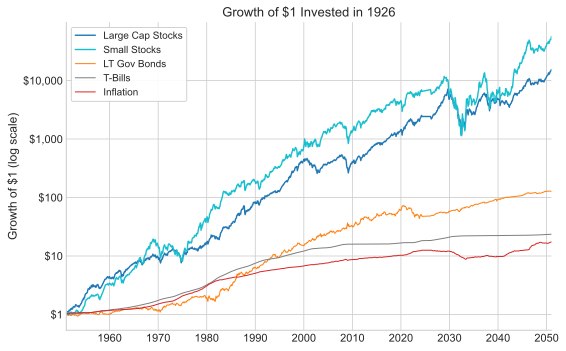
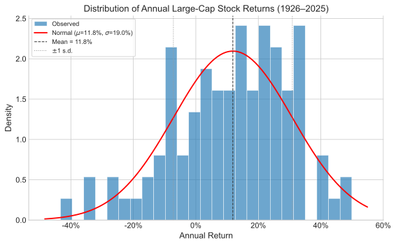

Chapter I
Capital Markets and Investment Performance
Returns, risk measurement, the equity premium, and historical capital markets data.
Overview
Securities are nothing more than promises of future payment, distributed through intermediaries like investment banks. These can be traded on exchanges such as the NYSE, AMEX, and NASDAQ.
Securities vary widely in complexity, from straightforward bonds to sophisticated structured notes. The fundamental characteristic shared across all securities is that they represent economic claims against future benefits, always incorporating a time dimension.
Key Concept
All securities, no matter how complex, share one essential feature: they are economic claims against future benefits, and therefore always incorporate a time dimension.
I. Finance from the Investor's Perspective
This module shifts focus from corporate decision-making to the investor's perspective. We examine how shareholders and bondholders who hold portfolios — collections of different securities — make financial decisions. The central question addressed is:
What rate of return will investors demand to hold a risky security?
II. Why Investors Invest
Primary motivations for purchasing securities include savings for future needs and wealth accumulation. Some investors accept high-risk ventures, such as lottery tickets, for potential significant payoffs. Additional motivations include charitable objectives, though these generate non-economic dividends and prove difficult to evaluate systematically.
III. Definition of Rates of Return
Return represents the growth in wealth resulting from an investment, expressed as a percentage for comparability. The basic formula is:
Simple Return
$$R_t = \frac{P_{t+1} - P_t}{P_t} = \frac{P_{t+1}}{P_t} - 1$$When dividends are included, the total return becomes:
Total Return with Dividends
$$R_t = \frac{P_{t+1} - P_t + D_t}{P_t}$$where $P_t$ is the price at time $t$, $P_{t+1}$ is the price at time $t+1$, and $D_t$ represents dividends paid during the period.
IV. Arithmetic vs. Geometric Rates of Return
Two different averaging methods exist for summarizing returns over multiple periods:
Arithmetic Mean Return
$$\bar{R}_A = \frac{1}{T}\sum_{t=1}^{T} R_t$$Geometric Mean Return
$$\bar{R}_G = \left[\prod_{t=1}^{T}(1 + R_t)\right]^{1/T} - 1$$Consider an illustrative example: $P_0 = \$100$, $R_1 = -50\%$, $R_2 = +100\%$. After the first period, wealth falls to $50; after the second, it returns to $100. The arithmetic average return is $\frac{-50\% + 100\%}{2} = 25\%$, but the geometric average is $\sqrt{(0.50)(2.00)} - 1 = 0\%$.
Key Concept: Arithmetic vs. Geometric Returns
The geometric return better reflects the actual investment experience (compound growth), while the arithmetic return suits single-period statistical models. The geometric mean is always less than or equal to the arithmetic mean, with the gap increasing as volatility rises.
V. Capital Market History
The 1980s
The 1980s represented exceptional returns for stock investors, with S&P 500 performance showing substantial growth.
The 1930s
This decade experienced severe market crashes globally:
U.S. large-cap stock investors earned essentially nothing — a slightly negative cumulative return — over the entire decade from year-end 1929 to year-end 1939.
Long-Term Performance (1926–2025)
Over the full century from 1926 through 2025, a dollar invested in large-cap U.S. stocks (the S&P 500 and its predecessors) grew to roughly $14,750 — and a dollar in small-cap stocks to about $32,400 — while a dollar in long-term government bonds grew to only about $117, and in 30-day Treasury bills to about $25. Over the same span consumer prices rose roughly eighteen-fold. The stock lines display far greater volatility than the bond lines, but the terminal-wealth difference is enormous — the power of compounding a higher average return over a long horizon.

Figure 1.1. Growth of $1 invested in U.S. stocks, bonds, and Treasury bills (1926–2025, log scale). Computed from SBBI data. Stocks dramatically outperform bonds over long horizons, but with substantially greater year-to-year volatility.
VI. The Risk Premium
The return differential between stocks and bonds is attributed to risk differences. "Volatility" describes the shakier performance of stocks compared to bonds. Investors are risk-averse — they prefer less risk when other factors remain equal. This motivates the concept of the risk premium: the additional return demanded for holding risky securities versus riskless alternatives like Treasury Bills.
Equity Premium
$$\text{Equity Premium} = \bar{R}_{\text{stocks}} - \bar{R}_{\text{T-bills}}$$From 1926–2025, the equity premium (large-cap stocks over 30-day Treasury bills) was approximately 8.5% (arithmetic) or 6.8% (geometric) annually.
Summary Statistics (1926–2025)
| Investment | Geometric Mean | Arithmetic Mean | Std. Dev. | High Return | Low Return |
|---|---|---|---|---|---|
| Large-Cap Stocks (S&P 500) TR | 10.07% | 11.85% | 19.04% | 49.9% | −43.3% |
| U.S. Small-Cap Stocks TR | 10.95% | 14.44% | 27.69% | 115.7% | −50.1% |
| LT Govt. Bonds (20Y) TR | 4.88% | 5.40% | 10.62% | 41.8% | −27.2% |
| IT Govt. Bonds (5Y) TR | 4.84% | 5.00% | 5.91% | 29.7% | −9.5% |
| U.S. 30-day T-Bills | 3.26% | 3.30% | 3.09% | 15.1% | −1.7% |
| Inflation (CPI) | 2.94% | 3.01% | 3.92% | 18.1% | −10.3% |
Source: SBBI series, 1926–2025 (Ibbotson, Exponential Wealth, forthcoming 2026). High/Low columns are the best and worst single calendar-year total returns.
VII. Standard Deviation as a Measure of Risk
Standard deviation quantifies volatility mathematically as the square root of the variance. It calculates the average spread of observations around the mean:
Standard Deviation
$$\sigma = \sqrt{\frac{1}{T-1}\sum_{t=1}^{T}\left(R_t - \bar{R}\right)^2}$$For large-cap stock returns (approximately $\sigma = 19.0\%$), assuming a normal distribution, approximately two-thirds of observations should fall within one standard deviation of the mean:

Figure 1.2. Distribution of large-cap stock annual returns (1926–2025), computed from SBBI data. The histogram shows the ±1 standard deviation range containing roughly 68% of observations. Actual return distributions exhibit "fatter tails" than the normal distribution predicts.
Limitations of Standard Deviation
The chapter acknowledges several limitations:
- Standard deviation equally weights high and low returns
- It heavily weights extreme observations
- It ignores distribution shape (skewness and kurtosis)
However, the benefits include providing a single comparable risk measure enabling portfolio analysis decisions.
There is evidence that stock returns may follow "stable" distributions with undefined variance rather than normal distributions, a hypothesis advanced by Benoit Mandelbrot. Return distributions show "fatter tails" than log-normal predictions suggest — extreme events (both positive and negative) occur more frequently than a normal model predicts.
Key Concept: Standard Deviation as Risk
Standard deviation provides a single, comparable measure of risk that enables systematic portfolio analysis. Despite its limitations — especially its assumption of symmetric, normally distributed returns — it remains the foundational risk measure in modern portfolio theory.